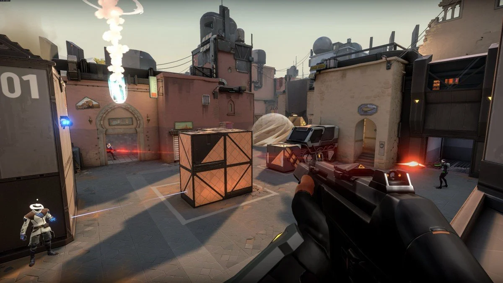
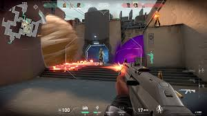

Poradnik do Valoranta (FPS – taktyczna strzelanka)
1. Podstawy:
Valorant to strzelanka 5v5, gdzie drużyny rywalizują o przejęcie bombsite'u lub obronę przed atakiem
przeciwnika. Każdy gracz wybiera agenta, który ma unikalne umiejętności. Gra wymaga zarówno dobrego strzelania,
jak i współpracy drużynowej.
2. Bohaterowie – agenci:
W Valorancie każdy agent ma specjalne zdolności. Przykłady:
- Jett: szybka postać, idealna do flankowania.
- Sage: healer, który może stawiać bariery i wskrzeszać sojuszników.
- Phoenix: postać, która potrafi leczyć siebie, tworzyć ogniste obszary.
3. Rozgrywka:
Atakujący:
- Twoim celem jest podłożyć bombę w jednym z dwóch punktów (A lub B). Pamiętaj, aby
dobrze wykorzystać umiejętności, takie jak dymy (smoki), które pozwalają na blokowanie widoczności.
Obrońcy:
- Twoim zadaniem jest powstrzymanie atakujących przed podłożeniem bomby. Stawiaj pułapki, używaj umiejętności kontroli mapy, aby utrzymać przewagę.
4. Kluczowe wskazówki:
- Komunikacja: Valorant to gra zespołowa, dlatego komunikacja z drużyną jest kluczowa. Używaj mikrofonu, aby przekazywać informacje o wrogach, pozycjach czy używanych umiejętnościach.
- Ścisła kontrola recoil: Strzelaj w trybie półautomatycznym i kontroluj celownik, aby trafić w głowę.
- Zakupy: Zanim rozpoczniesz rundę, upewnij się, że masz odpowiednią broń i umiejętności. Planowanie wydatków jest ważne, aby mieć przewagę nad przeciwnikami.

